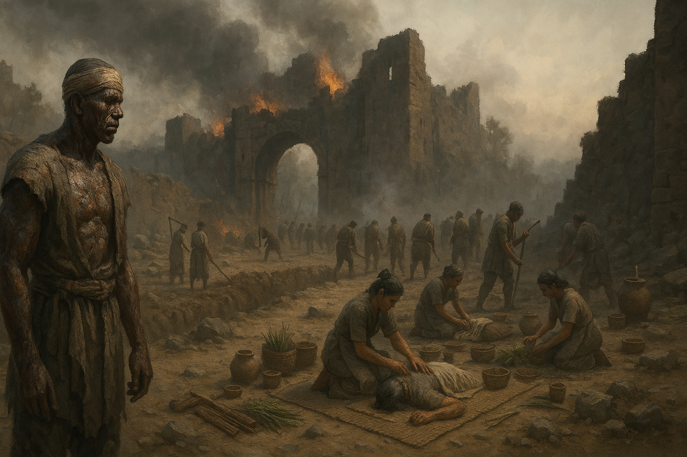
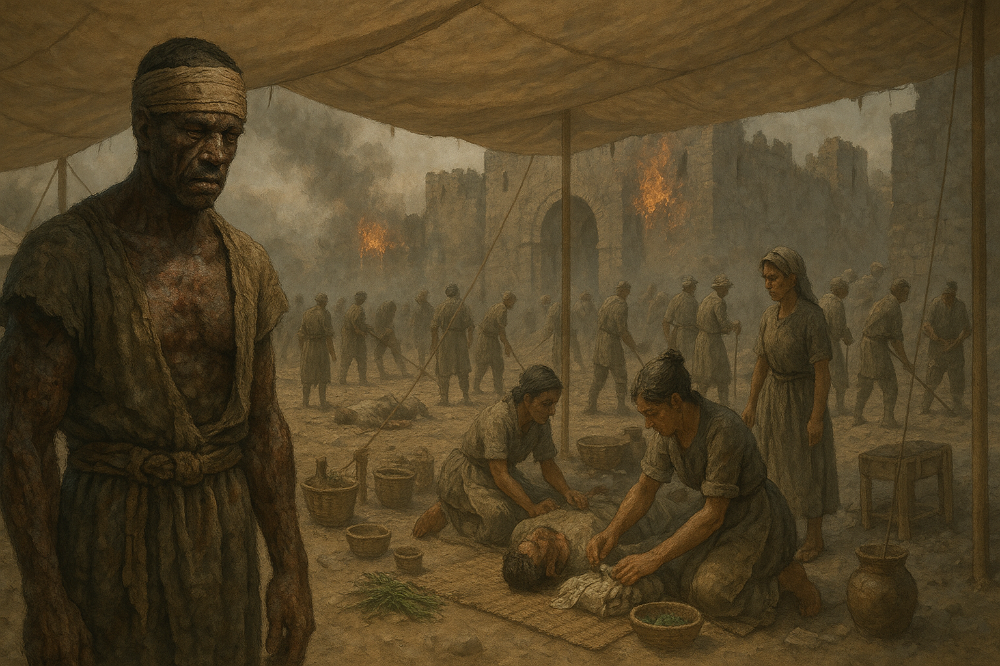
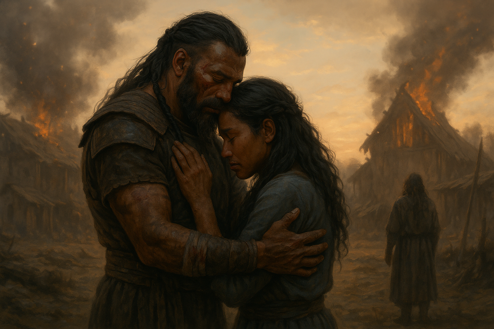
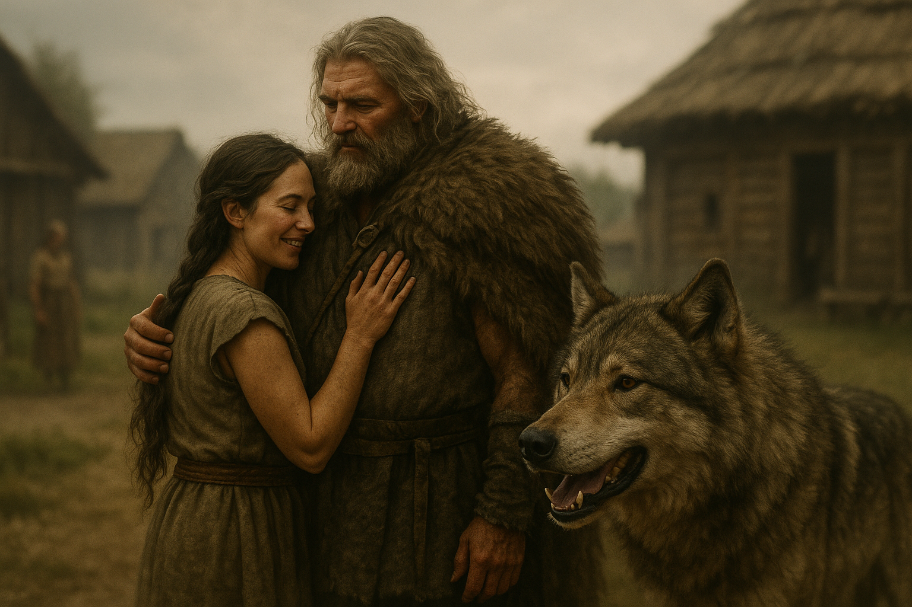
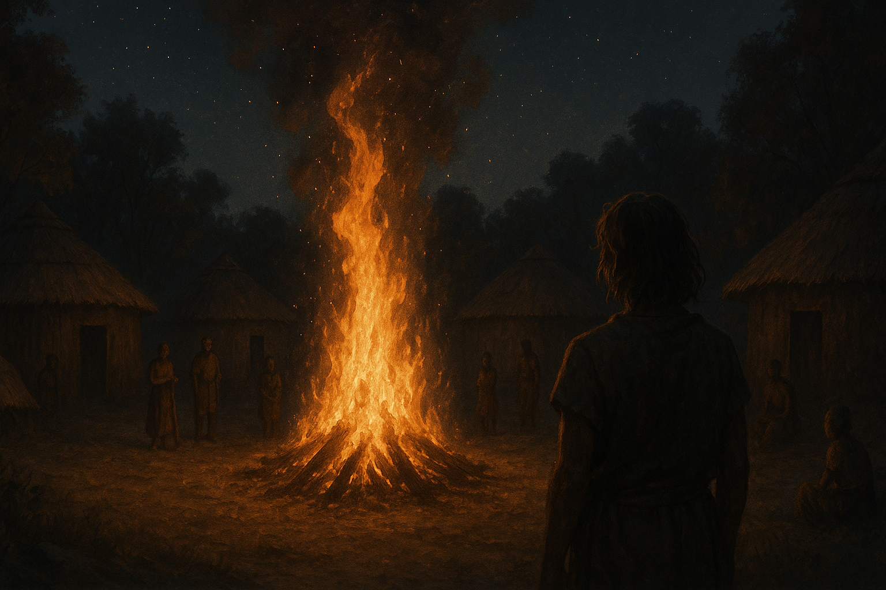
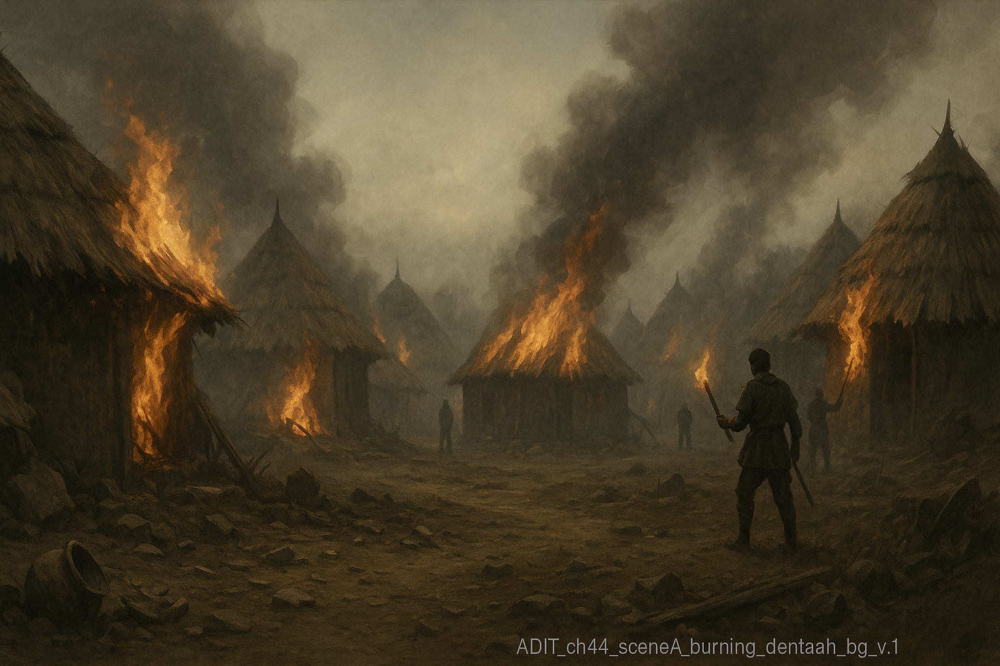
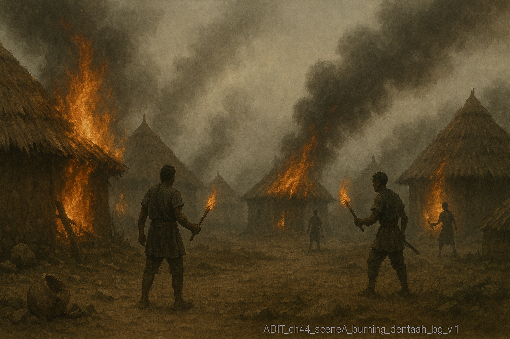
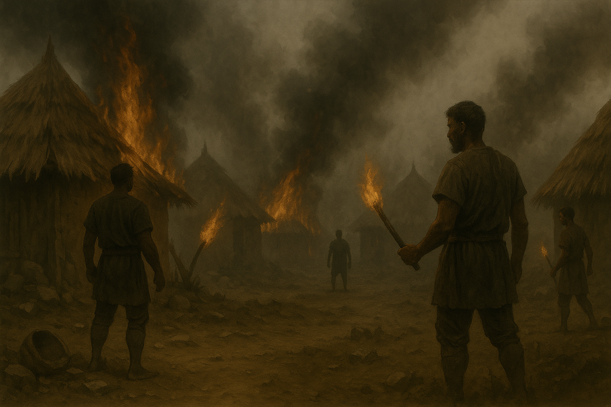
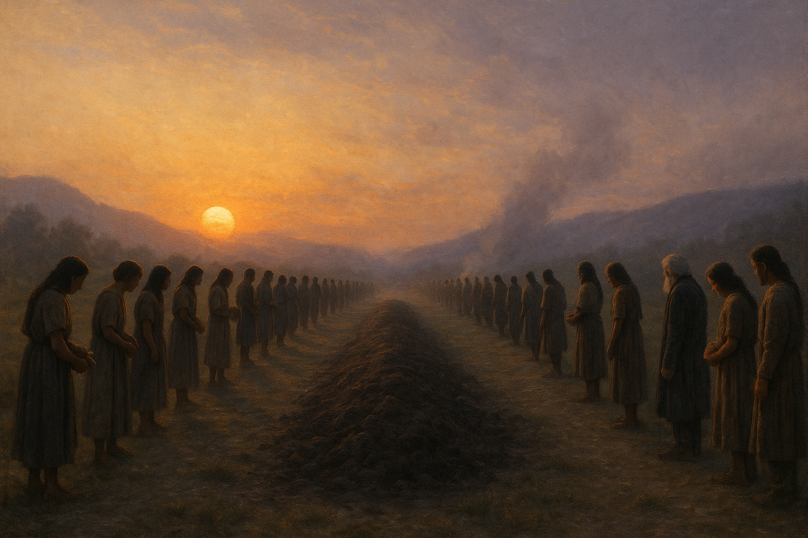

📖 Week 13 - Day 1
🎯 Focus: What makes characters make tough choices
📚 Chapter 42: "Aftermath" - After the battle at Denta-ah
💭 Goal: See how characters face hard decisions
Think about it like this:
Characters are the same - they have REASONS for their actions!
A struggle INSIDE a character's mind
"Should I do this or that?"
A struggle with something OUTSIDE
Fighting enemies, bad weather, etc.
This week we focus on INTERNAL conflict - the battles inside a character's heart and mind!
Why does Sekun-ak keep working even though he's badly hurt? What motivates him?
Even with terrible burns covering his body, Sekun-ak:
His Motivation: Taking care of his people matters more than his own pain. He puts duty before personal comfort.
📖 Chapter 43: "Nanka-tu"
📝 Today we learn important words from the chapter
🎯 Goal: Understand words about celebration and feelings
What remains or comes after a big event (usually something bad)
From Old English: "after" + "mowing" (what's left after cutting grass)
After- (later) + -math (mowing/result)
"Alex did not push his luck. He turned and ran toward Denta-ah." - This is the aftermath of the battle.
A wild party or celebration with lots of drinking and eating
From Latin "Bacchanalia" - festivals for Bacchus, the god of wine
Bacch- (god of wine) + -al (relating to)
"After the massive bacchanal the day and night before, the burning of Denta-ah seemed almost an anticlimax."
Endless; going on forever; never seeming to stop
From Latin "in-" (not) + "terminare" (to end)
In- (not) + -termin- (end) + -able (can be)
"Like all things—even interminable things—it ended eventually." - About the long march home.
Impossible to separate; tied together so tightly they can't be pulled apart
From Latin "in-" (not) + "extricare" (to untangle)
In- (not) + -extric- (untangle) + -ably (in a way that)
"She went to the ladder, ran down it and presented herself to them." - Monda-ak is inextricably bound to Alex.
Dark, gloomy, or sad in mood; serious and sad
From Latin "sub" (under) + "umbra" (shade)
Sombr- (shadow/dark) + -er (more of)
"Instead, the guards in the trees looked like children and were somber." - The mood when returning to Winten-ah.
📖 Chapters 44-45
💔 The celebration turns to tragedy
⚖️ Alex faces an impossible choice
🏠 Going home vs. saving Lanta-eh
To go home to Amy
To see his daughter
To be with his family
Honor his oath to Banda-ak
Save Lanta-eh
Help his adopted tribe
This is the strongest internal conflict in the whole story! Alex must choose between two things he desperately wants.
Even though Banda-ak is dead, the oath Alex made to him doesn't die. It passes to Ganku-eh, and now Alex is bound to help.
✍️ Today you write about what we learned
🎯 Focus on why characters make hard choices
📝 Use the structure we practiced
In these chapters, Alex faces a difficult choice between going home to his daughter Amy and honoring his promise to save Lanta-eh. What does Alex want most, and what stops him from getting it? Use details from the chapters to explain the struggle in Alex's mind.
Restate the question and state your main answer
Give proof from the text and explain it
Give more proof from the text and explain it
Give even more proof from the text and explain it
Restate the question and strongly state your answer
You've got this! Show what you learned about character motivation!